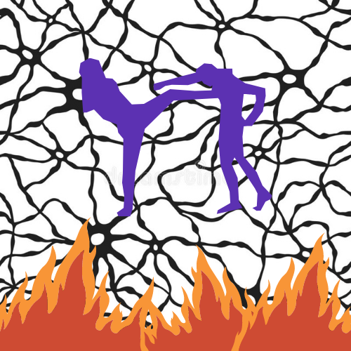

- If I were president, the first thing I would do is strictly ban gum. This is probably the most self-explanatory thought on my website. Gum is very disgusting in every way shape or form. People who chew gum always tend to let me know that they're chewing gum by making weird noises and it smells reaaaally bad. It's even worse when they wanna throw it away. There's people whod on't directly throw it in the trash and just put it on a surface that I can very clearly see. If a friend of mine did this I will simply unfriend them.
Being the bigger person and forgiving is crap. Go start a fire. Break some glass. Be dramatic. Destroy their favorite things. It's not about who is seen as stronger cause no shoots given what others who aren't even involved think. It's about feeling okay. It's not that 'mature' to just ignore what's bothering you. i believe this was a concept created by people who don't now how to fight back.
Feminism is overrated. Women go through all that and want "equality"? Oh no I want more than equality. I won't be telling boys I deserve the same as them cause I deserve more. To be honest, this is my least favorite thought of mine on from the thoughts I'm sharing. I don't think a person is superior for the way they were born, but whatever is happening on this planet made me think that men have too much already, and for what. This thought isn't very serious though(sometimes)
Babies should be banned. No really they should be. Or at least only allowed under solid terms and conditions. Those tiny squishy unspeaking creatures are very loud and anoying. They are difficult to understand and deal with. Babies also ruin their parents' lives simply by existing. They provide no freedom and no rest. I personally choose not to choose to create a life-threatening human. I was once a baby, but I'vre grown out of this phase and I feel bad for going through it in the first place. But to be more reasonable, I wouldn't blame a baby for being weird afterall but I'll blame the parents if I found a nasty kid wondering around and annoying everyone. Like you got a human? Have it for yourself.
The word 'edible' should be 'eatable'.
|  |